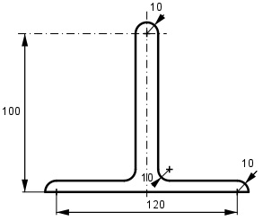
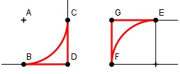

Aufgabe 163 Wie groß ist die Fläche A?

Hinweis:
Nimmt man links BDC und fügt dieses Stück rechts als FEG an, dann entsteht ein Quadrat. Dies gilt nur für gleich große Abrundungsradien. A = Rechteck1 + Rechteck2 + Halbkreis Rechteck1 = (120 mm + 2*10 mm) * 10 mm = 1400 mm2 Rechteck2 = (100 mm – 10 mm) * 20 mm = 1 800 mm2 r2 * π 102 mm2 * π Halbkreis = -------- = --------------- = 157 mm2 2 2 A = 1 400 mm2 + 1 800 mm2 + 157 mm2 = 3 357 mm2